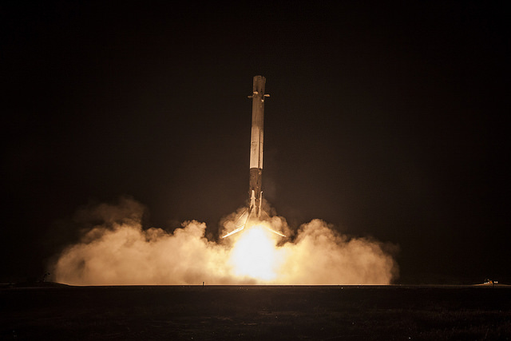

2020年4月14日
可重用性：使人的生活成为
多星球的关键
“ 如果能够弄清楚如何像飞机一样有效地重复使用火箭，那么进入太空的成本将减 少多达一百倍。完全可重复使用的车辆从来没有做过。这确实是彻底改变太空使用 权所需的根本突破。”
-埃隆·马斯克
SpaceX认为，全面，快速可重复使用的火箭是大幅降低太空访问成本所需的关键突 破。发射费用的大部分来自建造只飞行一次的火箭。与商业客机相比，每架新飞机 的成本都与猎鹰9相同，但每天可以飞行多次，并在其生命周期内进行数万次飞行。 按照商业模式，快速可重复使用的太空运载火箭可以将前往太空的成本降低一百倍。
尽管大多数火箭都设计为在重入时燃烧，但SpaceX火箭不仅可以承受重入，还可以 成功降落回到地球并再次飞行。
世界上第一个轨道级火箭发射
2017年3月，SpaceX取得了世界上第一个轨道级火箭的预兆。SpaceX的Falcon 9火 箭于2017年3月30日从佛罗里达州NASA肯尼迪航天中心的39A发射场发射了地球同步 通信卫星。任务的第一阶段以前曾支持2016年4月为NASA进行空间站货物补给发射。 在阶段分离之后，第一阶段成功地第二次返回地球，降落在驻扎在大西洋的无人机船 上。这次成功的成功代表了火箭全面，快速可重复使用的道路上的历史性里程碑。
